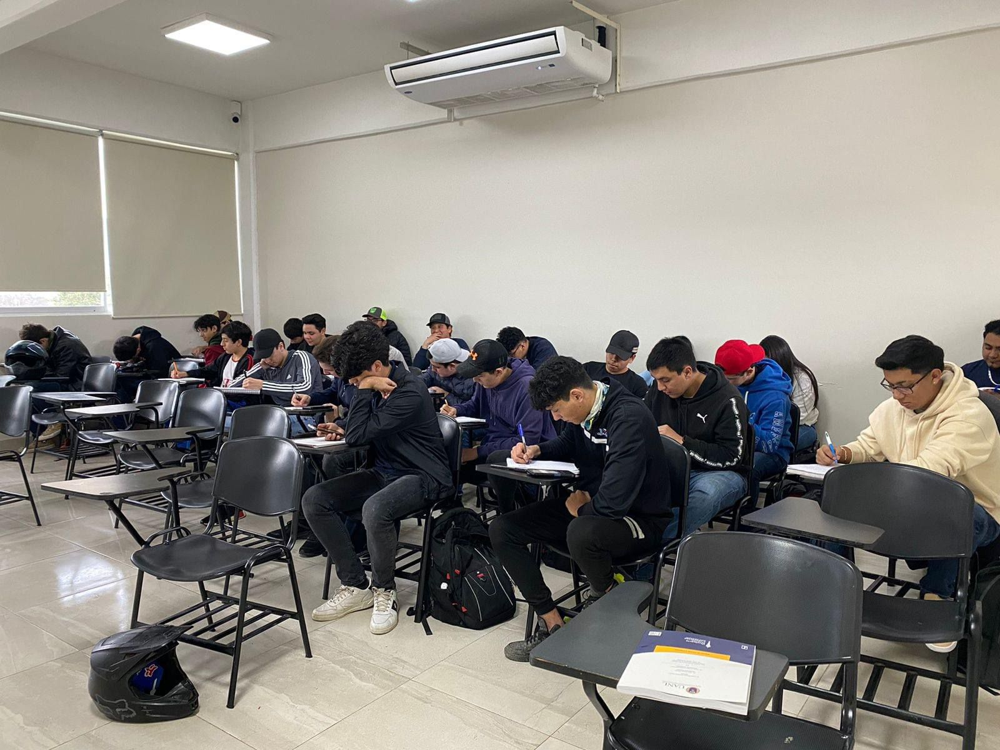
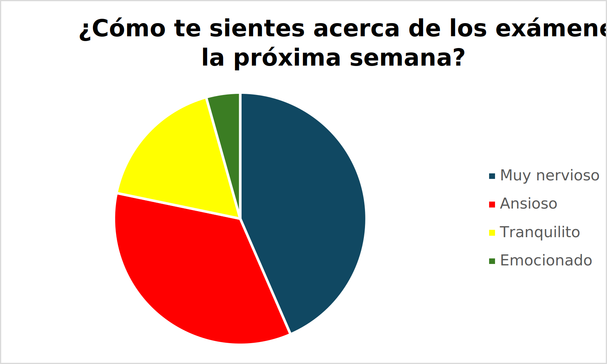
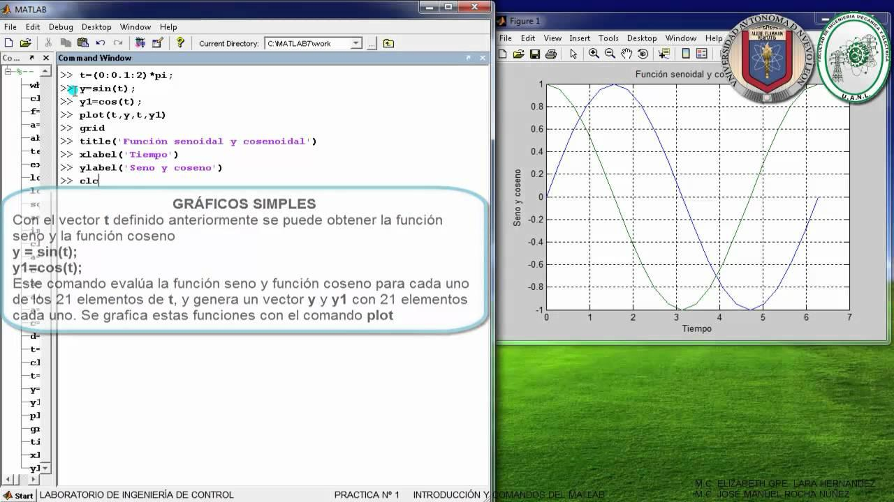
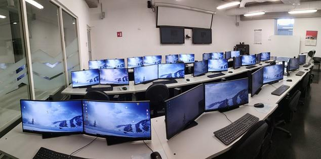
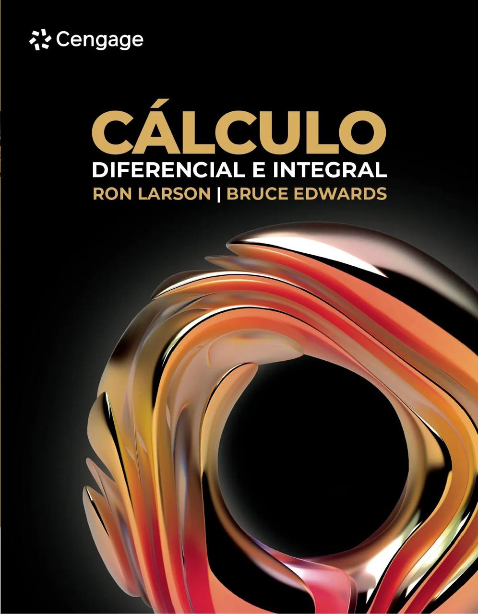
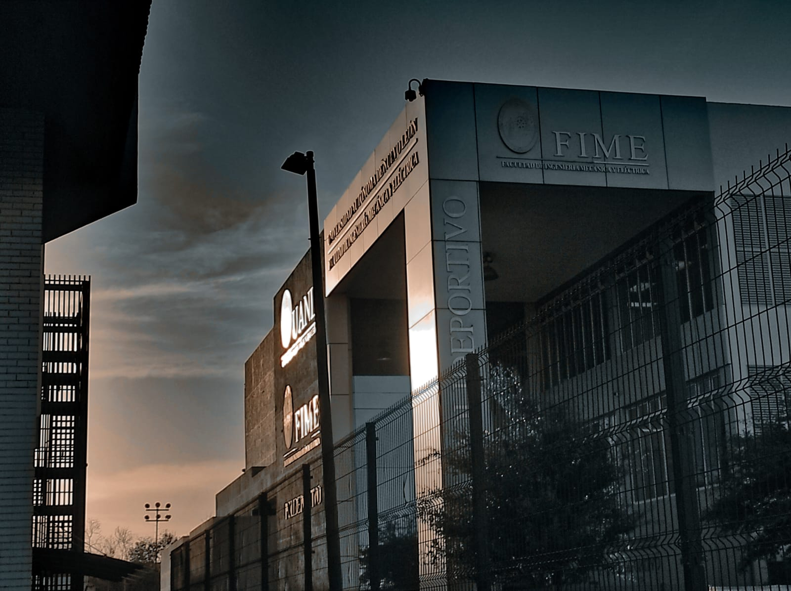

Medio Curso! Comienza el primer periodo de exámenes

Gerardo Rodríguez y Santiago Cruz
En la Facultad de Ingeniería Mecánica y Eléctrica, se acerca un período crucial: los exámenes de medio curso, programados para iniciar el Lunes 11 de Marzo de 2024. Estos exámenes, que se extenderán a lo largo de dos semanas, marcan un hito significativo en el calendario académico. Durante este lapso, las clases regulares y los laboratorios se suspenden, permitiendo que los estudiantes concentren sus esfuerzos en esta evaluación de suma importancia.
Con una calificación que representa una porción considerable de la nota final, la tensión entre los estudiantes es muy evidente. En una serie de encuestas que realizamos a los alumnos de la facultad, se reflejan diversas emociones: desde nerviosismo y ansiedad hasta emoción y tranquilidad. La incertidumbre sobre el desempeño en estos exámenes genera preocupaciones, ya que, para muchos, esta evaluación podría ser determinante para avanzar en su trayectoria académica.

Una de las materias que más se repitió en la encuesta en la parte donde se preguntó por la materia más difícil a presentar fue "Matemáticas”, donde se mencionó mas que nada matemáticas III y matemáticas IV, aunque algunos admiten que todas las asignaturas representan un desafío considerable.
Una pregunta común es cómo enfrentar el desconcierto ante una pregunta desafiante durante el examen. La mayoría opta por dejar un espacio en blanco y volver más tarde, mientras que otros eligen avanzar y regresar posteriormente. Estas decisiones estratégicas son cruciales en un entorno donde cada minuto cuenta.
Los exámenes de medio curso no solo representan una evaluación académica, sino también un desafío emocional para los estudiantes de la Facultad de Ingeniería Mecánica y Eléctrica. Con la fecha de inicio a la vuelta de la esquina, los alumnos se preparan para enfrentar este obstáculo con determinación y perseverancia, sabiendo que su desempeño podría definir su éxito en el semestre. Éxito compañeros!
Forjando el Futuro de las Matemáticas en FIME: Perspectivas de dos Maestros Visionarios
Jesús Hernández y Alejandro Jaramillo
Las matemáticas son útiles para todo tipo de ámbitos, como en este caso las ingenierías. En FIME los estudiantes tienen sus respectivas opiniones y posturas sobre este tema, pero muchos no tienen una gran experiencia. Por ende, se les hicieron entrevistas a los docentes César Soria y Ricardo Villarreal, para darnos su perspectiva sobre las matemáticas y su trayectoria.
Empezando con Cesar Soria, fue un graduado de FIME en 1983, él compartió su fascinante trayectoria desde ingeniero en electrónica y comunicaciones hasta su papel fundamental como maestro de matemáticas. Su carrera docente inició en 1984 cuando se le ofreció enseñar geometría analítica y álgebra para ingeniería. Soria ha desarrollado una metodología logística que coloca el aprendizaje por encima de la simple enseñanza. Enfatiza que "lo más importante no es enseñar, sino que el estudiante aprenda". Su visión se centra en comprender las operaciones matemáticas y su significado, promoviendo un enfoque más profundo y aplicado.
El ingeniero destaca el desafío de motivar a los estudiantes para aprender matemáticas y aboga por un enfoque práctico, conectando la teoría con aplicaciones ingenieriles reales. Reconoce el papel vital de la tecnología, señalando el uso de software como Deriv y MATLAB en sus métodos de enseñanza.

Al mirar hacia el futuro, Soria aboga por involucrar a la generación actual para que estudien las matemáticas con gusto, no solo por obligación. Su visión positiva y su dedicación reflejan un compromiso continuo con la formación de ingenieros destacados en la FIME.
Mientras tanto, desde otra perspectiva, el maestro Ricardo Villarreal, también del departamento de matemáticas, comparte su punto de vista sobre el desarrollo de esta materia. Su aprecio por las matemáticas desde joven lo llevó a convertirse en profesor de esta disciplina. Villarreal destaca los cambios a lo largo de la historia de FIME, adaptándose a cada generación de estudiantes y adoptando nuevos métodos de enseñanza y tecnologías aplicables.

Villarreal destaca los cambios a lo largo de la historia de FIME, adaptándose a cada generación de estudiantes y adoptando nuevos métodos de enseñanza y tecnologías aplicables.En su opinión, las matemáticas son fundamentales para el perfil de cualquier ingeniero exitoso, con aplicaciones que van desde lo teórico hasta el ámbito laboral.
El maestro enfatiza que el alumno alcanzará su mejor rendimiento académico si muestra un genuino interés en la materia y se dedica a sus estudios. También revela el meticuloso proceso de selección de maestros para enseñar matemáticas, exigiendo al menos una maestría especializada. El ingeniero informa que el futuro de las matemáticas en FIME siempre buscará afectar positivamente a los estudiantes, incluso frente a eventos inesperados como lo fue la pandemia del 2020.

Como se puede apreciar ambos maestros comparten la creencia en la importancia de las matemáticas en la formación de ingenieros y la necesidad de adaptarse a las nuevas generaciones. Mientras Soria destaca la evolución en la enseñanza a lo largo de los años, Villarreal resalta la adaptabilidad de FIME a los cambios. Ambos comparten la convicción de que el interés genuino de los estudiantes es clave para el éxito académico. Coinciden en el impacto positivo de la tecnología y en conectar la teoría con aplicaciones prácticas.
En conjunto, las perspectivas de estos dos maestros visionarios brindan una percepción completa y enriquecedora sobre la enseñanza de las matemáticas en la facultad, demostrando un compromiso compartido con la calidad educativa y la formación de ingenieros excepcionales.
Foto de la semana

Guillermo Hernández